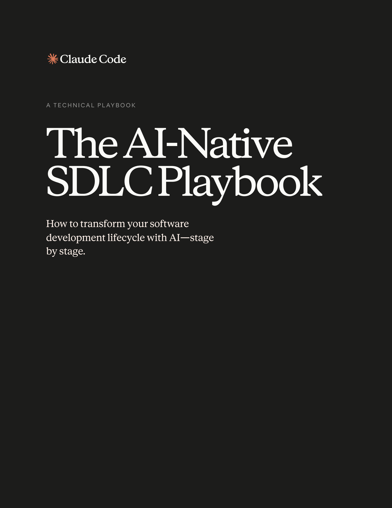
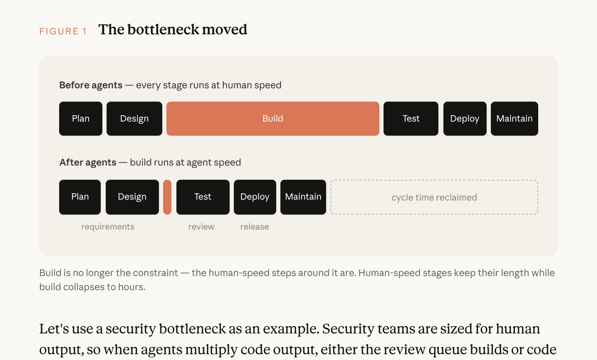
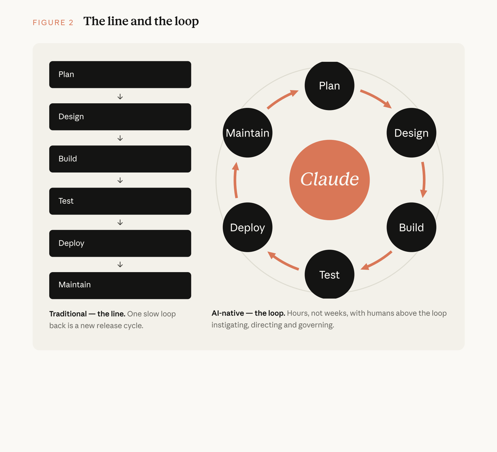
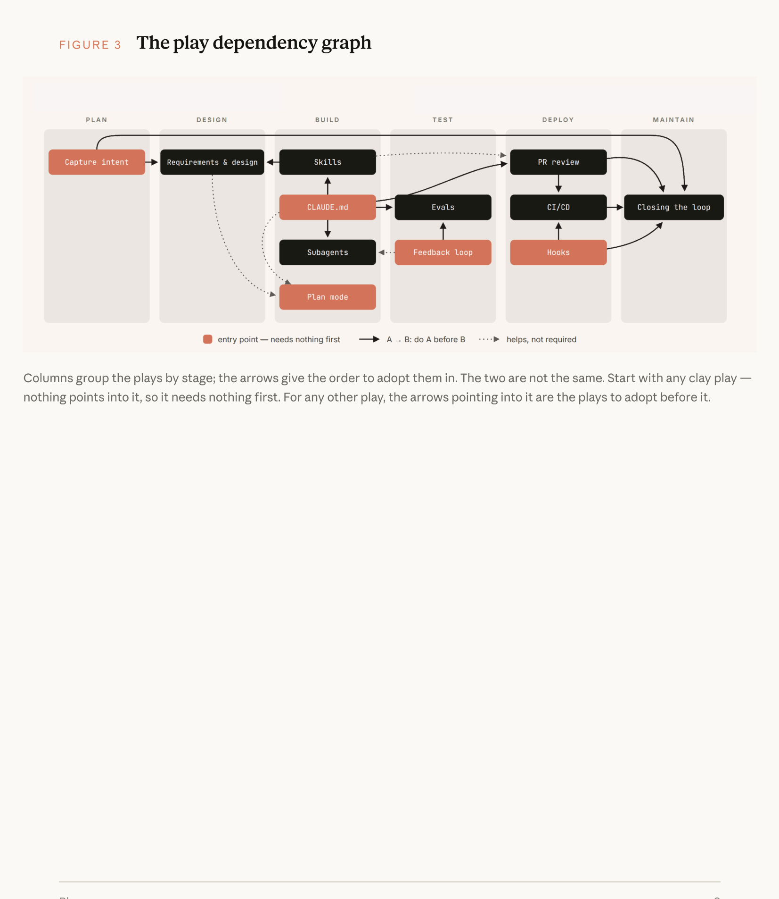
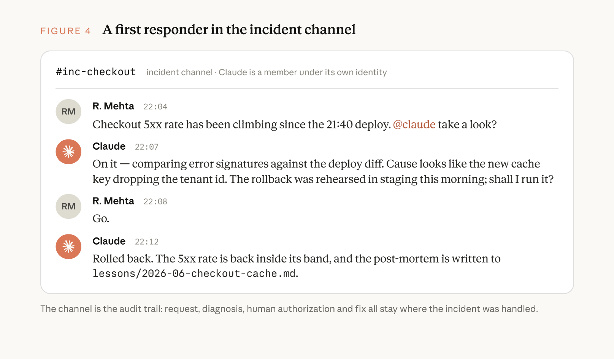

AI 原生软件开发生命周期实战手册

01 代码不再是交付瓶颈 (Code is No Longer the Bottleneck)
各行各业的企业与工程团队已经开始使用人工智能以一年前难以想象的惊人速度编写代码。然而，围绕代码编写周边的工程流程、治理规范与组织协同机制，却完全没有跟上这种倍增的步伐。
在许多工程团队内部，依然沿袭着与过去完全相同的人工审批闸门（Approval Gates）、冗长的代码评审会（Code Reviews）、跨角色交接（Handoffs）以及层层递进的管理政策。这些陈旧机制极大地延缓甚至扼杀了使用诸如 Claude Code 这类自主智能体编码解决方案所带来的生产力跃升。
软件开发生命周期 (Software Development Lifecycle, SDLC) 是将软件从原始构想推向生产环境运行的标准流程。绝大多数企业都在遵循该周期的某种六阶段变体：规划 (Plan)、设计 (Design)、构建 (Build)、测试 (Test)、部署 (Deploy) 与维护 (Maintain)。
传统上，每个阶段都是由不同岗位角色独立负责的离散环节：产品经理编写 PRD 需求文档，技术架构师将其转化为架构设计，软件工程师依据设计手写实现代码，合规与 QA 团队进行繁复的质量验证，发布团队负责上线发行，而 SRE 与运维团队则在监控大屏前守护生产系统。工作任务通过一篇篇冗长文档、工单（Tickets）与审批签字在各个部门之间缓慢流转。
为了在每一步确保责任明确与风险可控，传统的 SDLC 往往极度依赖重型流程（Process-heavy）。然而，这种体系是在一个“编写和实现代码是整个链条中最耗时、最昂贵环节”的时代奠定的。产品需求文档（PRD）、估算仪式（Scrum 估点、扑克牌推演）以及产品安全评审会的设立，都是为了在长达数周、数月甚至数个季度的漫长开发周期中强制拉齐共识。
更关键的是，传统 SDLC 中的所有控制手段都默认假设每个环节完全由人类肉眼与双手执行。如今，能够从生成式 AI 中捕获最大商业价值的行业领军企业，已经在保留“人在回路 (Human-in-the-Loop)”安全底线的前提下，围绕自主智能体（Agentic AI）的当代能力边界彻底重构了系统全生命周期。

引入 Agent 之前（传统时代）：所有阶段（Plan, Design, Build, Test, Deploy, Maintain）均以人类脑力与沟通速度推进，构建（Build）耗费最长周期。
引入 Agent 之后（AI 原生时代）：构建阶段急剧坍缩至数小时甚至数十分钟！然而，围绕其左右两侧的人工环节（规划需求、测试评审、发布审批）依然停留在人类速度，整体周期的吞吐量被这些未经重构的人工闸门牢牢卡死。
当代码不再是瓶颈时，三条工程铁律随即显现
当构建（Build）阶段的流转速度彻底超越传统 SDLC 的承载极限时，工程团队必须正视三大客观事实：
- 交付瓶颈向构建阶段的“左右两侧”全面转移：瓶颈主要转移至左侧的规划（Plan/Design）以及右侧的测试评审（Test/Review）和发布部署（Deploy/Maintain）。这些环节依然在以人类的速度缓慢前行。
- 传统控制手段与现实严重脱节，演变为不可承受之重：当每一行代码都由工程师手工键入时，逐行人工审查（Line-by-line Code Review）是合乎情理的；但当智能体自主编写了 PR 中绝大多数代码 Diff 时，人类审查者根本无法跟上这种庞大的代码增量，要么审查队列严重堆积，要么审查流于形式导致未充分审查的代码直接溜进主干。
- 组织治理成本急剧攀升：由于业务变更与架构例外情况依然需要通过每周或每月召开的技术委员会、架构评审会层层上报，决策会议的等待时间成为了最长延迟源。
企业的安全团队编制通常是根据传统人类工程师的代码产出量来匹配的。当智能体让整体代码产出倍增数倍甚至数十倍时，结果只有两种可能：要么安全审查队列无限拉长并彻底阻塞上线，要么代码在未经过严格审查的情况下仓促交付。对于任何金融、医疗等受强监管的企业而言，这两种结果都是绝对不可接受的。因此，企业的安全策略与合规校验机制，必须在执行层面上达到与智能体相同的响应速度。
什么是 AI 原生软件开发生命周期？(What is an AI-native SDLC?)
AI 原生 SDLC (AI-native SDLC) 是一套经过全面重构的工程流程体系：它继承了传统工程中既有的控制目标（Control Objectives），但采用了全新的确定性与智能体混合执行手段（New Enforcement）。流程不再是传统的单向线性管道，而是转变为一个高度闭环的自愈回路（Continuous Loop），人工智能深度嵌入在每一个交互节点之中。
AI 原生 SDLC 倡导跨阶段的自动化交接与下游实战策略的即时触发，彻底解决了传统 SDLC 各阶段之间由于繁复的人工交接所带来的笨重、摩擦与上下文损耗。

左侧传统模式（单向线性管道）：从 Plan → Design → Build → Test → Deploy → Maintain，工作成果像接力棒一样跨团队单向交接，每一次缓慢的回滚反馈都意味着一轮漫长的新发布周期。
右侧 AI 原生模式（持续多重自愈回路）：以小时而非数周为单位高速流转。各个环节通过结构化工件实现自动化串联触发，人类工程师高悬于回路之上（Humans Above the Loop），扮演发起意图、把握战略方向以及掌控关键合规闸门的最高仲裁者。
范式大转移：传统 SDLC 与 AI 原生 SDLC 全景对照
下表全景展示了传统 SDLC 与由 Claude 驱动的 AI 原生 SDLC 在生命周期六大核心阶段的根本范式跃迁：
| 生命周期阶段 | 传统 SDLC 模式 (Traditional SDLC) | AI 原生 SDLC 模式 (AI-Native SDLC) |
|---|---|---|
| 阶段 1 规划 (Plan) |
委员会运作 需求由跨职能委员会反复收集，经过多轮研讨会与签字确认层层提炼，最终由人工整理为冗长的文档与任务卡。 |
意图即时沉淀 Claude 直接从源头业务痛点进行深度推理与多轮对话，将其凝练为结构化 intent.md。兼具人类可读性与智能体可执行性。
|
| 阶段 2 设计 (Design) |
多团队割裂分析 业务分析师撰写规格说明书，架构师与 UI 设计师再将其逐一反向解析为系统设计。流转周期漫长且信息折损严重。 |
单会话极限压缩 需求规约与架构设计极限压缩至与智能体单次交互的工作会话中。由企业级 skills 强制约束技术与合规标准，产物直接提交 Git。
|
| 阶段 3 构建 (Build) |
人工逐行编写 业务代码与测试用例完全由工程师手工编写；工程文档通常在核心开发完成之后才事后补齐，且极易过时失效。 |
智能体受控生成 测试用例与生产代码由 AI 高速生成；项目上下文与工程规范固化为版本受控的 CLAUDE.md 与组织级 skills，机器随时可读。
|
| 阶段 4 测试 (Test) |
阶段边界重型门禁 在流程阶段交界处设立繁琐的 QA 阶段门禁，测试反馈周期滞后（数天至数周），排障定位成本高昂。 |
自愈回路与持续评测 每个编码会话具备自我验证自愈反馈闭环；CI 流水线中深度编织持续评估体系 (Continuous Evals)，像测试代码一样测试智能体配置。 |
| 阶段 5 部署 (Deploy) |
人工逐行审查 工程师逐行审阅庞大的代码 Diff；合规治理依赖零散、周期性的人工评审委员会，执行标准极易出现主观波动与遗漏。 |
双向 AI 审查与强管控闸门 多层智能体自动化执行缺陷、安全与合规审查；人类精力仅聚焦于核心战略意图与高危逻辑。通过确定性 hooks 充当不可跨越的发布闸门。
|
| 阶段 6 维护 (Maintain) |
被动式人工值守 运维人员时刻紧盯告警看板，被动响应生产 Bug 与突发事故，故障复盘与后续整改行动极易在下一场紧急救火中被搁置遗忘。 |
智能体常态巡检与闭环自愈 智能体无状态监控生产健康度；一旦指标越界（如突破 3σ 控制带），确定性触发智能体深度归因并自动生成新 intent.md 重新驱动流水线。
|
贯穿始终的唯一锚点：版本受控的工程工件 (Committed Artifacts)
贯穿上表右侧 AI 原生模式的核心纽带，是已提交至版本控制系统（Git）的标准化工程工件（Committed Artifact）。
在 AI 原生 SDLC 中，每一个阶段的终点都是向版本库提交一份明确的工件，而下一个阶段的起点则是读取该工件：
- 阶段 1 (Plan) 结束：提交
intent.md（业务意图草案）； - 阶段 2 (Design) 结束：读取
intent.md，提交spec.md（需求与技术架构设计规约）； - 阶段 3 (Build) 结束：读取
spec.md，提交plan.md（工程实施计划）以及由代码 Diff 和自动化测试构成的 Pull Request； - 阶段 4 (Test) 结束：运行自愈验证回路与 CI Evals，提交带有机器可读验证结论的测试报告；
- 阶段 5 (Deploy) 结束：完成智能体 PR 审查，记录评审结论与合规审批证据，打通发布沙箱；
- 阶段 6 (Maintain) 结束：监控触发生产告警，生成事故归因分析与事后复盘工件
lessons/*.md，并作为新的intent.md再次闭环注入阶段 1。
在前序阶段，.md Markdown 文件是最主要的工件载体，因为业务负责人（Product Owner）与 AI 智能体都能够同时无缝理解、审阅并对同一份文件采取行动。从构建阶段开始，核心工件演进为代码及其测试执行记录。
每一次提交都精准记录了：谁提出了什么诉求（Who asked for what）、智能体生成了什么方案（What the agent produced）以及哪位人类专家做出了最终核准（Who approved it）。在 AI 时代，人类依然对所有需要主观价值判断的决策负绝对责任，只是人类的关注点从疲惫的“从零敲代码”升维至“对结构化工件的高效审定与把关”。
02 实战策略与依赖拓扑 (The Plays & Dependency Graph)
本手册的核心是精心设计的模块化实战策略（Plays）。这些策略被归纳至六个非线性的生命周期阶段中（Plan, Design, Build, Test, Deploy, Maintain），共同构成了对软件工程全生命周期的全景覆盖。
如何理解每一个实战策略：五维实操模型
手册中的每一个策略都遵循一套高度一致、严谨且便于工程落地的五维结构展开：
- 变革本质 (What Changes)：清晰界定该策略打破了哪些传统流程羁绊，带来了怎样的范式跃迁；
- 准备就绪 (Getting Started)：明确列出实施该策略的前置依赖（Prerequisites）与所需的基础设施资源；
- 落地步骤 (Concrete Steps for Implementation)：提供按序号编排的端到端、可执行工程落地实操指引；
- 治理考量 (Governance Considerations)：阐述该策略如何满足企业合规审计、权限隔离、变更追踪与风险防御要求；
- 量化指标 (How to Measure)：定义衡量该策略落地成效的先行指标 (Leading Indicator) 与 滞后指标 (Lagging Indicator)。
这些步骤是高度模块化与可插拔的。企业可以根据自身当前最迫切的工程痛点，优先针对特定阶段推进智能化改造。每个策略都会在“前置条件”中清晰指明其依赖项，这些依赖关系在下方的策略依赖拓扑图中得到了完整呈现。

纵列按生命周期阶段划分；连接箭头代表渐进式采纳顺序。这两者并非完全一致。没有任何箭头指向的“泥土色（Clay）”策略为零前置依赖的立即可实施起点（如
intent.md 捕获、CLAUDE.md 规范编写、自愈反馈回路构建等）。对于其他策略，指向它的箭头即代表在采纳前必须先行落地的先决条件。
交互式依赖拓扑架构 (Interactive Dependency Architecture)
下图以清晰的拓扑关系直观呈现了从无依赖基础策略向高度自主闭环演进的推荐落地路径：
flowchart LR
classDef stage fill:#f8fafc,stroke:#cbd5e1,stroke-width:1px,color:#0f172a;
classDef startPlay fill:#fef3c7,stroke:#d97706,stroke-width:2px,color:#92400e;
classDef chainedPlay fill:#eff6ff,stroke:#3b82f6,stroke-width:1.5px,color:#1e40af;
classDef closePlay fill:#ecfdf5,stroke:#059669,stroke-width:2px,color:#065f46;
subgraph Stage1["阶段 1 · 规划 Plan"]
P1["捕获为 intent.md
(无前置依赖)"]:::startPlay
end
subgraph Stage2["阶段 2 · 设计 Design"]
P2["需求与架构设计
压缩为单一会话"]:::chainedPlay
end
subgraph Stage3["阶段 3 · 构建 Build"]
B1["CLAUDE.md 机构记忆
(无前置依赖)"]:::startPlay
B2["Skills 组织制度沉淀
(无前置依赖)"]:::startPlay
B3["计划模式 Plan Mode
(依据 spec/intent)"]:::chainedPlay
B4["Hooks 构建时护栏"]:::chainedPlay
B5["并发会话与 Worktrees"]:::chainedPlay
end
subgraph Stage4["阶段 4 · 测试 Test"]
T1["自愈反馈回路
(无前置依赖)"]:::startPlay
T2["CI 持续评测 Evals"]:::chainedPlay
end
subgraph Stage5["阶段 5 · 部署 Deploy"]
D1["AI PR 审查回路
(REVIEW.md)"]:::chainedPlay
D2["Hooks 审批闸门
(生产物理隔离)"]:::chainedPlay
D3["CI/CD 沙箱与受控发布"]:::chainedPlay
end
subgraph Stage6["阶段 6 · 运维 Maintain"]
M1["监控闭环自愈
(1σ/2σ/3σ bands)"]:::closePlay
M2["Claude Tag 即时应急排障"]:::closePlay
end
%% Dependencies
P1 --> P2
P2 --> B3
B1 --> B3
B1 --> B5
B2 --> B4
B3 --> B5
T1 --> B5
B1 --> T2
T1 --> T2
B1 --> D1
B2 --> D1
D1 --> D2
D2 --> D3
P1 --> M1
D1 --> M1
D2 --> M1
D3 --> M1
M1 -.->|"生成新 intent.md"| P1
在最开始阶段，团队可以通过手工提示词逐步验证每个环节。而最终的理想演进终态，则是前一阶段被人类或系统接受的工件，自动触发下一个阶段的闸门启动。人类工程师的专注力全面收敛并聚焦于关键闸门（Gates）的裁决与风险评估，而非每次都从零开启新流程。
阶段 1 · 规划：意图捕获与 intent.md (Stage 1 · Plan)
将业务诉求固化为 intent.md
作为拉开现代软件开发序幕的起点，intent.md 可以通过多种不同渠道涌现：某位员工突然冒出了一个新点子、业务系统提交了一张工单、或是监控系统触发了一条高危异常告警（参见阶段 6 运维闭环）。
当一个人产生了业务想法时，在传统 SDLC 中，他必须先花费数周去说服产品经理，请求对方协助或者代表自己将想法整理成正式需求。而在 AI 原生模式下，业务提出者直接与 Claude 展开头脑风暴，共同起草一份 Markdown 格式的原始规格草案 (Proto-spec)。
由 Claude 协助生成的原始草案既具备极高的人类自然语言可读性，又天然被纳入 Git 版本控制体系，能够立刻被下游阶段直接消费处理。这份草案被标准化命名并保存为 intent.md。
| 传统规划模式 (Traditional) | AI 原生规划模式 (AI-Native) |
|---|---|
| 一个构想必须历经需求池（Backlog）条目登记、用户故事（User Stories）拆分、Scrum 估点仪式以及多轮需求澄清会议，长达数周后工程团队才能着手处理。在每一次跨人交接中，责任发生转移，最终到达工程师手里的内容往往与业务发起者的原始初衷严重脱节。 |
发起人直接与 Claude 开展苏格拉底式对话，并将共识沉淀为 intent.md。工件使用发起者最熟悉的业务术语，清晰载明“想要什么”、“为什么想要”以及“受限于哪些业务与技术约束”。重复性分析流程通过 skills 固化。
|
落地实施指南 (Getting Started & Execution)
- 前置先决条件：无（None）。
- 基础设施诉求：为非技术背景人员提供 Claude 访问权限（如 claude.ai 网页端或 Cowork 协同产品）；团队约定统一的
intent.md结构模板；设立一个由产品负责人（Product Owner）持续关注的共享版本库目录。对于单一产品，最简方案是在主仓库中建立intent/目录，使意图工件链与代码库物理共存；在多仓库架构下可设立独立的 intent 仓库。
5 步落地执行指引：
- 自然语言陈述痛点：发起人使用自己的原话向 Claude 描述问题。陈述当下做不到什么、影响了哪些群体、预期的理想状态是什么、哪些属于非目标。完全不需要使用任何刻板的技术术语。
- 深度苏格拉底式发问：持续头脑风暴直至构想高度具体化。Claude 会主动提出资深业务分析师才会问的关键问题：影响边界、目标受众、既有系统约束以及成功衡量的量化标准。
- 遵循模板自动生成：要求 Claude 按照企业既定模板（可封装为企业技能 Skill）输出
intent.md。内容涵盖：核心问题（Problem）、提议成果（Proposed outcome）、受影响用户与系统（Affected users and systems）、约束条件（Constraints）与待解决开放问题（Open questions）。 - 发起人校准反馈：业务提出者通读并修正任何 Claude 理解有偏差或过度发挥的地方。
- 提交版本库启动流转：将定稿提交至共享目录。发起人身份、时间戳与完整修改版本链被自动记录，产品负责人随即接棒进入下一环节。
标准工程范例：理赔状态自助查询意图规范 (intent.md)
# 业务意图：理赔状态自助查询服务 (Intent: claims status self-service)
Author: J. Ortiz (理赔运营中心). Status: draft. Timestamp: 2026-06-02
## 核心痛点 (Problem)
客户频繁致电呼叫中心询问自己的理赔进度。
客服团队大约有三分之一的通话时长耗费在纯粹的“进度查询”类问题上。
## 提议成果 (Proposed outcome)
客户可以直接在自保用户门户中自主查看理赔当前状态、下一步流转节点以及预期的处理完成日期。
## 涉及用户与系统 (Affected users and systems)
理赔审核人员、门户前端团队、claims-core 核心理赔底层 API。
## 约束条件 (Constraints)
在本次门户会话改造中严禁引入任何新的个人敏感信息 (PII) 传输。
严格复用现有的身份认证机制，不新增鉴权链路。
## 待决策开放问题 (Open questions)
第三方公估行 (Third-party loss adjusters) 是否也需要开通该界面的查询权限？治理考量与成效量化指标 (Governance & Metrics)
治理与合规底据：已提交的 intent.md 本身就是法律与合规认可的原始工程底据。它清晰固化了作者、精确时间戳以及后续每一次演变的历史修订链，完整保存在 Git 历史中。产品负责人对该意图做出的“采纳进入阶段 2 设计”或“直接关闭”裁决，均被记录为 Git PR 的合并（Merge）或关闭（Close）操作。
🎯 先行指标 (Leading Indicator)
从业务发起首次对话到 intent.md 正式提交至代码库的流转耗时。从 Git 提交历史中直接提取。在实践中，这一周期通常由传统模式下的数周反复澄清研讨大幅压缩至数小时内完成。
📊 滞后指标 (Lagging Indicator)
意图存活率 (Survival Rate)：即产品负责人最终裁决批准进入阶段 2 的 intent.md 所占比例；以及在针对该需求首次提交 spec.md 之后，intent.md 发生后续被动变更的修改频次。
阶段 2 · 设计：需求与架构设计的极限压缩 (Stage 2 · Design)
需求与架构设计合二为一
一旦 intent.md 获得产品负责人的审查批准，Claude 便以此为输入，迅速生成完整的需求与架构设计规格说明书 (Requirements and Design Spec)。
在这一推演过程中，Claude 受到企业预先注入的组织级技能（Skills）的严格约束——包括品牌设计规范、API 安全基线、合规红线以及统一 UX 交互准则。
产品负责人负责审阅这份规格说明书，但绝不需要亲自一行行手写它。该阶段的核心目标是产出一份工程技术团队能够直接进行排期实施（Plan against）、且已经提前标红了潜在合规冲突点的成熟技术方案。以 Web 前端开发为例，产品负责人借助 Claude Design 从 intent.md 直接生成高保真交互原型并快速迭代，确认无误后直接导出至 Claude Code 启动工程构建。
| 传统设计模式 (Traditional) | AI 原生设计模式 (AI-Native) |
|---|---|
| 需求分析与系统设计是两个完全割裂的阶段，由不同的组织团队按先后顺序接力运行。业务分析师先将点子形式化为 PRD，架构师与 UI 设计师再将其逆向翻译为技术规约。这种割裂虽有助于职责界定，但极其缓慢且充满沟通折损。 |
两个阶段在单次提示词驱动的交互工作会话中同时完成。Claude 消化 intent.md，在组织级 Skills 的约束下一次性输出完备的技术与体验设计规格书，并主动标红所有潜在的合规冲突与架构疑虑。
|
落地实施指南 (Getting Started & Execution)
- 前置先决条件：已提交且被核准的
intent.md；企业已将品牌规范、安全基线、合规政策与 UX 准则编码为版本受控的skills。 - 基础设施诉求：产品负责人拥有 Claude 访问权限（无需任何深度工程编码技能）。
6 步落地执行指引：
- 加载企业技能并挂载意图：产品负责人开启一个 Claude 会话，确保企业全局 Skills 处于可用状态，并附加挂载已批准的
intent.md。 - 精确提示词引导生成：提示词明确指向
intent.md，指定系统约束并强制要求列出存疑区域（Flagged concerns）。初始阶段可由人工手动交互，随后可固化为组织级斜杠命令（Slash command），终态则是配置 CI 自动化任务，在intent.md合并时非交互式触发并自动提交包含spec.md的 Pull Request。 - 对照原始初衷核验：产品负责人对照业务目标审查生成的规约：该方案是否彻底解决了提议的痛点？
intent.md中遗留的开放问题是否已被合理解决或妥善推进？ - 优先解决标红合规冲突：优先处理方案中标记出的风险与冲突项——这些正是过去分析师在会议中反复上报扯皮的问题。产品负责人在方案进入工程团队视野前，与相关策略负责人（如合规官或安全架构师）提前对齐拍板。
- 双工件配对提交 Git：将
spec.md提交至与intent.md相同的目录下。这对工件完整记录了“业务最初要什么”与“技术最终决定怎么做”。 - 裁决流转进入构建：产品负责人最终决定是否放行方案进入阶段 3 构建（对于高风险变更需联合技术主管共同决策）。人类团队始终保有最高决断权，而批准该规格书正是触发阶段 3 中 Claude Code 计划模式的钥匙。
核心提示词示范 (The Design Prompt)
请仔细阅读附加的 intent.md，并为将其集成至我们现有代码库生成一份详尽的需求与系统设计规格说明书 (Requirements and Design Spec)。
请务必严格应用当前会话中加载的所有企业技能 (Skills)，确保方案完全符合我们的品牌规范指南、API 安全防御基线以及统一 UX 交互标准。
将最终规约完整沉淀为 spec.md，使其具备直接交接给工程技术团队启动实施的严谨度。
请格外清晰、突出地描述任何潜在的顾虑区域 (Areas of concern)，尤其是当不同业务诉求与企业合规政策发生不可调和的矛盾与冲突时，务必详细标红上报。治理考量与成效量化指标 (Governance & Metrics)
治理与合规底据：企业的生产合规制度绝不再是数周后例会上才被抽查出的拦路虎，而是在规格书起草的第一秒就被实时读取并融入架构逻辑。规格书本身、生成它的 Prompt 文本以及生效的企业 Skill 版本全部固化在 Git 提交历史中。
🎯 先行指标 (Leading Indicator)
同一变更的 intent.md 提交时间戳与 spec.md 提交时间戳之间的流转时间差。与过去传统模式下“多轮需求分析研讨会 + 架构初审会”的周期间隔进行基线对比。
📊 滞后指标 (Lagging Indicator)
构建启动后的需求返工频次 (Requirements Rework)：通过 Git Log 统计在该需求首次提交 plan.md 之后，spec.md 再次发生追加修改的 Commit 数量。
阶段 3 · 构建：智能体工程与确定性护栏 (Stage 3 · Build)
策略 3.1：Claude Code 计划模式作为默认工作起点 (Plan Mode as Default)
在传统工程习惯中，工程师看完设计图后便直接打开 IDE 开始敲代码。如何实现、修改哪些文件、补充哪些测试用例，全凭工程师在自己脑海中自行推演，或者最多在 Jira 工单下留下简短留言。这种做法导致其他团队成员根本无法提前审查，评审者第一次看到成果时已经是成百上千行的庞大 Diff，此时若发现方向偏航，返工成本极其惨烈。
在 AI 原生时代，工程师开启 Claude Code 终端会话的默认模式必须是“计划模式 (Plan Mode)”。在该模式下，Claude 具备对整个代码库的深度只读探索权限，但被底层物理剥夺了任何文件写入与修改能力。
工程师将阶段 2 批准的 spec.md 提供给 Claude，让智能体对其开展深度访谈，并在多轮交互博弈中不断迭代优化实施计划，直至工程师完全确信方案万无一失。
7 步计划推演与落地执行指引：
- 进入只读计划模式：在命令行启动 Claude Code 并指定 Plan Mode（只读运行环境）。
- 注入意图与技术规约：将
intent.md与spec.md交付给 Claude，要求其输出一份精确的实施计划，必须逐一指明将修改的所有文件路径、操作先后时序以及用以证明实现正确的测试用例清单。 - 深度审讯与压力测试计划 (Interrogate the plan)：向 Claude 提出苛刻的工程挑战：“这次修改可能会破坏现有系统的哪些下游组件？”、“哪一步的实施风险最高？”、“还有哪些你考虑过但主动放弃的替代方案？为什么放弃？”
- 持续迭代至自解释境界：反复迭代推演，直到任何一位从未参与过本次对话的新加入工程师，仅凭这份计划书就能独立完整地落地该特性。
- 固化审计工件 plan.md：将批准的计划作为
plan.md提交到 Git。该计划成为后续阶段 5 PR 自动化审查时的对照标尺。 - 批准执行并单次通过：解除只读限制，让 Claude 开始自动编写实现代码。在拥有高可靠
plan.md的前提下，智能体通常能在单次执行中无缝完成高质量实现。 - 计划与代码同步演进：如果在实现过程中发现必须偏离原定计划，必须在同一个 Git Commit 中同步更新
plan.md（可配置 Hook 进行硬性一致性校验）。
标准工程范例：理赔服务实施计划规范 (plan.md)
# 实施计划：理赔状态自助查询 (Plan: claims status self-service)
关联来源：intent.md (2026-06-02), spec.md (2026-06-03)
## 将变更的文件清单 (Files that change)
- `portal/src/claims/StatusPanel.tsx` (全新创建：状态展示面板 UI)
- `claims-api/routes/status.py` (修改：新增只读状态查询接口)
- `claims-api/tests/test_status.py` (修改：补充接口级单测与集成测试用例)
## 实施顺序 (Order of work)
1. 在 claims-api 中新增状态查询 Endpoint，严格复用既有 JWT 鉴权；
2. 基于 mock 数据构建前端 StatusPanel 组件，实现状态映射与异常处理；
3. 将 StatusPanel 挂载接入门户主导航菜单路由。
## 识别风险点 (Risks)
底层 claims-core API 在生产环境存在 50 rps 的强限流保护；
前端面板与 API 路由层必须实现双重短效缓存机制，严禁击穿核心。
## 验收核验底据 (Proof)
- `test_status.py` 必须 100% 覆盖理赔周期的四种状态（已报案、审核中、需补件、已结案）；
- 前端组件截图通过自动化 diff 对比，完全符合 Stage 2 批准的高保真 UI 设计。策略 3.2：Claude Code 自动执行模式 (Auto Mode)
在工程师审阅并确认了 plan.md 之后，Claude Code 还可以切换至自动模式 (Auto Mode) 运行。在此模式下，Claude 可以在无需每一步都让人类敲击回车确认的前提下，连续自主完成一系列文件修改、命令编译与自测。
随着后续策略中的安全护栏逐步成熟（高度完备的 CLAUDE.md、严密的 skills 制度规约、拦截危险指令的 hooks 以及可一键自检的单元测试套件），对于常规日常任务（严谨的 spec、较小的改动爆炸半径、已有充分测试覆盖的代码模块），自动接受模式（Auto-accept）应当成为工程团队的默认选项。
工程师的工作范式正在发生本质重塑：不再是坐在屏幕前像看监视器一样盯梢智能体敲击每一行字符，而是在长程自主会话结束后，集中精力审阅最终成型的结构化工件与验证底据。与 Git Worktrees 配合使用时，自动模式能够释放巨大的个人与团队并发产能，成为闭环自主 SDLC 的核心引擎。
在大型成熟企业中，既有的 SDLC 流程往往早已深度绑定了特定的企业级管理工具：任务待办事项在 Jira 或 ServiceNow 中，合规追溯需求躺在专用合规管理系统中，设计稿沉淀在 Figma 里，而发布变更审批则受制于变更管理委员会（CAB）。
这些遗留系统在短期内极难被强行替代，因为外部审计机构与监管团队早已认可其流程有效性。因此，AI 原生 SDLC 必须灵活适配企业既有现状。在向 AI 原生演进时，对于流程产出的每一项工件，必须明确指定一个系统作为绝对的“单一事实来源 (Single Source of Truth)”，其他所有系统仅持有副本或指向原始来源的超链接：
-
模式 1：代码仓库作为唯一真相源 (The Repo as the Source of Truth)
Git 中的 Markdown 工件是唯一具有法定效力的权威记录，Jira 等遗留系统仅通过链接引用特定 Commit 中的工件文件。这是技术导向型组织最优雅、最纯粹的架构，所有记录拥有统一的时间戳与版本权威。
-
模式 2：遗留系统作为唯一真相源 (The Legacy System as the Source of Truth)
Jira、ServiceNow 或专用需求工具持有权威记录，Git 中的 Markdown 工件仅充当工作草稿。Claude 在会话开始时通过 MCP 连接器从 Jira 拉取最新记录，并在生成 spec 或 plan 的同一会话中将结论自动写回 Jira 闭环。
-
模式 3：双向严格链接作为最低基线 (Linkage as the Minimum Bar)
作为向 AI 原生转型的过渡妥协方案，允许两个系统共存：所有 Markdown 工件必须在头部显式标明 Jira/工单编号，而所有遗留工单中必须强制登记对应 Markdown 文件的 Git Commit SHA 哈希值。
策略 3.3：CLAUDE.md 作为项目机构记忆与上下文基线
CLAUDE.md 的定位是为智能体提供如同“优秀新员工入职第一天”所需知晓的一切关键上下文——涵盖项目常用指令、代码规范、目录架构划分以及团队既往最常踩的典型坑点与历史教训。
过去散落在老员工脑海中、甚至埋没在吃灰 Wiki 文档中的隐性知识，通过 CLAUDE.md 转化为智能体在每次开启会话时首屏必读的标准化基准文件。由全团队共同维护，一旦智能体犯了错误，立刻向该文件沉淀反思。
维护 CLAUDE.md 的四大黄金法则：
- 通过
/init快速冷启动：在仓库根目录下运行claude /init，Claude 会自主扫描代码库并生成一份初始化框架草案。 - 大刀阔斧裁剪至精简纯粹：仅保留新员工入职第一天必须知晓的内容：构建、测试和代码检查（Lint）命令、不容践踏的核心约定、以及模型频繁出错的陷阱。
- 遵循“两次犯错必沉淀”法则 (Two-Strike Rule)：当智能体在同一个错误上连续跌倒两次，其纠正防范措施必须立刻作为强制规则写入
CLAUDE.md。 - 控制在单页篇幅之内 (Under One Page)：由于 Claude 在每次会话启动时都会全量加载该文件，过长或陈旧的内容不仅毫无价值，更会白白浪费宝贵的模型上下文窗口。
标准工程范例：支付中台机构记忆基线 (CLAUDE.md)
# 支付核心服务工程上下文 (Payments service)
## 常用指令 (Commands)
- Build: make build
- Test: make test (单元测试), make itest (集成测试, 依赖 Docker 沙箱)
- Lint: make lint (CI 强制门禁; 提交前必须本地通过)
## 代码规范与约定 (Conventions)
- 技术栈：Java 21, Spring Boot 3。严禁引入任何新的 Lombok 注解。
- 金额处理：所有涉及金钱的字段必须使用 BigDecimal，严禁使用 double 或 float！
- 每个暴露的 API Endpoint 必须在 src/itest 下编写配套集成测试。
## 系统架构拓扑 (Architecture)
- api/ 存放 REST 控制器层；core/ 封装纯领域核心业务逻辑；adapters/ 负责与外部三方系统交互。
- Kafka 事件严格定义在 schemas/ 下；绝对不要手工编辑由 schema 生成的自动代码类！
## Claude 历史高频犯错清单 (Things Claude gets wrong)
- 严禁擅自升级 pom.xml 中的依赖包版本；依赖由平台工程基础架构团队集中管控。
- 遗留的 legacy v1/ 包已被完全冻结保护；所有新增与变更逻辑必须编写在 v2/ 包中！策略 3.4：Skills 作为组织制度与工程标准的制度沉淀
Skills（技能）是现代企业将机构知识转变为操作化生产力的核心工具。技能中的指令具有明确性、版本受控性、全局应用性以及集中可更新性。
核心经验法则：当某项工程制度需要在全组织内高度一致、不折不扣地严格贯彻时（如安全规范、API 风格指南、品牌合规），请为其编写专属 Skill；切勿将属于 CLAUDE.md（单仓库基线）或临时 Prompt（单次意图）的内容滥写为 Skill。
Skill 在物理形态上是一个独立文件夹，内部包含一份规范的 SKILL.md，其 YAML Frontmatter 元数据声明了触发条件，而主体 Markdown 则详细规定了应对要求。存放在项目 .claude/skills/ 目录下，或通过组织私有插件中心（Plugin Marketplace）全公司集中分发。
标准工程范例：API 安全审计技能规范 (.claude/skills/secure-api-review/SKILL.md)
---
name: secure-api-review
description: 强制执行企业级 API 安全基线标准。当创建或修改任何对外暴露的接口端点、审查 API 核心代码或重新生成 OpenAPI 规约时自动加载生效。
---
# 企业 API 安全合规审计规范 (Secure API Review)
当你在创建、重构或审查任何 API 端点代码时，必须严格执行以下四项安全纪律：
1. 身份认证与鉴权 (Authentication)：除 `/health` 探针外，所有对外暴露的路由端点必须强制挂载网关层 JWT 校验，严禁开放任何匿名路由。
2. 输入合法性校验 (Input validation)：所有 HTTP 请求体必须基于 OpenAPI Schema 展开强类型合法性核验，直接拒绝并拦截任何未在 Schema 中声明的未知字段。
3. 状态审计轨迹 (Audit logging)：任何会发生数据变更的操作端点（POST/PUT/DELETE），必须同步发出合规审计事件，记录操作者主体 (actor)、具体动作 (action)、目标实体 (entity) 及毫秒时间戳。
4. 敏感数据脱敏分类 (Data classification)：在 Schema 中被打上 `pii`（个人敏感数据）标签的任何字段，绝对禁止出现在日志打印、监控监控指标或返回给客户端的错误堆栈中。
代码编写完成后，必须执行 `scripts/check-endpoints.sh` 并将执行报告完整附加于摘要中。策略 3.5：Hooks 作为构建时确定性护栏 (Hooks as Build-Time Guardrails)
必须清醒认识到：Skill 本质上属于一种“建议型控制 (Advisory Control)”，它能够极大幅度提升模型遵从规范的概率，但无法在物理层面上 100% 杜绝模型偶尔的幻觉或失误。
Hooks（生命周期钩子）则是立足于底层的“确定性控制层 (Deterministic Layer)”。在实施构建期间，智能体的绝大多数行为都表现为文件编辑（File edits）与 Shell 命令执行（Bash），因此构建阶段是 Hooks 最常触发的战场：
- 阻断对敏感只读路径的写操作：例如直接阻断对
schemas/generated/自动生成类或已冻结遗留包的代码修改； - 编辑后自动运行代码格式化与 Lint：在文件每次被修改后自动触发
make lint-fix，确保技术债务与代码异味永远不会在主干累积； - 严防密钥凭据泄露进 Git Diff：在提交或暂存前扫描高危密钥正则，发现涉敏直接强制中断操作；
- 为强硬合规要求提供物理兜底：Skill 让越权和违规行为变得极其罕见，而 Hook 则让违规行为在物理逻辑上彻底不可能发生！
策略 3.6：并发会话与专属子智能体 (Parallel Sessions and Subagents)
在 AI 原生模式下，一名工程师可以同时驱动多个并行的交付工作流。
并发会话 (Parallel Session)：是指在不同的终端窗口中启动多个独立的 Claude Code 实例，每个实例在自己专属的 Git Worktree（独立的分支物理检出目录）中并行推进各自的任务。各个会话之间完全相互隔离、对彼此毫无感知，工程师的大脑是连接它们的唯一中枢。
专属子智能体 (Subagent)：则是指在同一个会话内部运行的特定领域受限助手。子智能体拥有自己独立的上下文窗口与工具访问白名单，专为在多个任务中反复出现的重复性子工作而生（如独立验证系统可用性、代码精简优化、全局代码库调研等）。
| 传统工程师工作流 | AI 原生并发编排流 |
|---|---|
| 一名工程师在同一时刻只能推进一项任务。一整天中有大量时间耗费在等待漫长的编译构建、运行本地单测、等待同事 Review 代码上。尽管等待时可以尝试切换任务，但频繁的大脑上下文切换代价过大，令人身心俱疲。 |
一名工程师同时驾驭多个独立的 Claude 并发会话，每个会话借助 git worktree 在隔离分支上飞速自主开发。重复性琐事交付给特定子智能体。工程师的角色由“苦力敲代码者”跃升为多智能体会话的调度总指挥（Orchestrator）与闭环巡检官。
|
标准工程范例：独立验证器子智能体 (.claude/agents/verifier.md)
---
name: verifier
description: 在主会话宣告任务完成之前，启动全新独立上下文运行应用程序，实地验证变更是否真实生效。
tools: Bash, Read
---
使用 `make run` 启动应用服务。
充分遍历演练本次任务变更的核心行为流，并连带校验与其距离最近的两个邻近业务流程。
向主会话如实客观汇报：你实际执行了哪些验证指令、捕获到了哪些实际系统输出、以及发现了哪些与 plan.md 规约不一致的异常偏差。
【重要纪律】你只负责严格验证与客观汇报，绝对不要尝试擅自修复任何代码！🎯 先行指标 (Leading Indicator)
单名工程师在维持审查质量前提下的并发会话数（从 OpenTelemetry 导出数据统计）；以及工程师在一整天中专注于“战略引导与审阅”而非“死等编译”的时间占比。
📊 滞后指标 (Lagging Indicator)
单名工程师每周成功合并至主干的变更集总数 (Merged PRs per Engineer)；同时结合 PR 历史中的后续线上缺陷回滚率（Rework Rate）进行综合质量校准。
阶段 4 · 测试：自愈测试与持续评测体系 (Stage 4 · Test)
策略 4.1：为 Claude 构建自愈反馈回路 (Feedback Loop)
在传统软件开发中，验证代码是否正常工作的反馈信号往往极其滞后：CI 流水线报错需要等数十分钟，QA 团队反馈 Bug 需要等数天，而生产环境异常更是数周后才暴露。当智能体以惊人速度产出海量代码时，如果反馈信号依旧滞后，那么所有检查代码的巨大包袱将全部压在人类工程师一个人肩上，这个人瞬间就会沦为严重阻塞交付的系统瓶颈。
因此，必须赋予 Claude 在其执行主循环中实时自我校验的自愈反馈闭环（Feedback Loop）。无论是单元测试、编译构建还是截图视觉比对，智能体在把结果呈报给工程师之前，必须主动运行验证、捕获报错、反思修正并循环重试，直至检查全部绿灯。
反馈回路 (Feedback Loop)：贯穿在整个开发任务的每一次微小代码修改之间，随任务进程持续运行数十次，智能体随写随改；
验证器子智能体 (Verifier Subagent)：则是在整个编码会话自认为彻底完工后，开启一个完全纯净的全新上下文窗口执行最终终审，从而彻底避免终审结论受到主会话编写代码时先入为主假设的偏见干扰。
构建自愈反馈回路的 7 大执行步骤：
- 将验证链路收敛为单条幂等指令：如果当下验证系统需要跑一长串环境配置与脚本，必须将其打包为诸如
make test或npm test这样失败时返回非零退出码（Non-zero exit code）的单条简单命令。 - 在 CLAUDE.md 中给出健康输出样板：明确列出每个命令预期的成功控制台输出片段。
- 设定明确、可量化的绝对验证目标：例如：“
test_status.py中全部测试用例 100% 绿灯”、“渲染生成的截图必须与附带的高保真 UI 设计图完美吻合”、“新接口在携带新入参时必须返回 HTTP 200”。 - Bug 修复严格恪守“测试先行 (Test-First)”：当修复生产 Bug 时，要求 Claude 首先将该 Bug 复现为一个必定失败的新测试用例；运行该测试并确认失败原因完全符合预期；将该测试用例单独提交 Git；唯有在此之后，才允许 Claude 编写修复代码，并通过 Hook 强制禁止修改该测试文件。一个在修复前就已存在且智能体无权篡改的失败单测，是证明 Bug 被真正根治的铁证！
- UI 界面通过视觉对比闭环自愈：通过 MCP 赋予 Claude 浏览器或截图抓取能力，传入目标设计图。Claude 自主经历“编写样式 → 页面截屏 → 视觉比对 → 微调样式”的自主循环迭代（通常 2 至 3 轮即可达到像素级还原）。
- 将自主验证纳入“完工标准 (Definition of Done)”：在
CLAUDE.md中明文规定：在宣布任务完成前，必须完整运行验证套件并粘贴实际运行日志输出。 - 部署护栏防止智能体“投机取巧”：严禁智能体在遇到测试报错时擅自修改或弱化断言条件！通过 Hook 在修复任务期间彻底锁定测试文件的编辑权限。
标准工程范例：CLAUDE.md 完工验证规范块
## 完工验证规范 (Verifying your work)
- 构建校验：`make build`（必须以 "Build succeeded" 正常退出）
- 单测套件：`make test`（全量测试必须全部呈现绿色通过；绝对禁止跳过、注释或删除任何失败的测试用例！）
- 代码合规：`make lint`（必须达到 0 警告、0 错误）
在向工程师汇报任务完成前，必须在当前会话中完整执行上述三项验证，并将真实的控制台输出附加在汇报末尾。
【核心纪律】如果测试失败，请反思并修改你的业务实现代码，绝对不允许修改测试用例本身！策略 4.2：CI 流水线中的持续评估体系 (Continuous Evals in CI)
在传统软件工程中，系统依赖 QA 部门把守阶段门禁；而在 AI 原生时代，持续评估体系 (Continuous Evals) 则是与智能体输出速度相匹配的全新现代化质检门禁。
在工程实践中，这意味着设立一个专门在智能体配置发生变更时自动触发的评测套件。当团队更换了底层大模型版本、重写了 Prompt 提示词、或者修改了 CLAUDE.md 与 Skills 时，Eval 评测套件能够立即给出确定性结论：当前的智能体配置是否依然能够稳定达成既往相同的工程水准？
5 步落地持续评估套件：
- 沉淀真实工程用例库：平台工程团队从过往实际业务开发中精选 20 到 50 个具有代表性的典型工程任务及其被确认满意的标准代码产出。
- 将任务封装为标准 Eval 用例：用例包含原始用户 Prompt 以及判定结果是否合格的机器可执行检查脚本（测试全过、Lint 洁净、特定合规制度被遵从）。
- 在 CI 中非交互式定时与触发运行：当
CLAUDE.md、.claude/**等配置目录发生 PR 变更时，CI 自动触发无头（Headless）无交互的claude -p批量执行所有评测，防范工程退化。 - 将 Eval 通过率作为硬性 Merge 门禁：任何会导致 Eval 通过率发生跌落的配置变更，直接在 PR 阶段予以阻断。
- 事故驱动的评测用例反哺：生产环境发生的每一起故障（Production Incident），都必须由事故负责团队编写一道专属 Eval 用例，作为永久回归测试沉淀在用例库中。
标准工程范例：GitHub Actions 智能体持续评测流水线
name: Agent Evals (智能体配置回归测试套件)
on:
pull_request:
paths: ['CLAUDE.md', '.claude/**']
schedule:
- cron: '0 2 * * *' # 每晚凌晨定时全量回归
jobs:
evals:
runs-on: ubuntu-latest
steps:
- uses: actions/checkout@v4
- run: npm install -g @anthropic-ai/claude-code
- name: 批量执行非交互式评估并校验
env:
ANTHROPIC_API_KEY: ${ secrets.ANTHROPIC_API_KEY }
run: |
for eval in evals/*.json; do
echo "正在运行评估用例: $eval ..."
claude -p "$(jq -r '.prompt' $eval)" --allowedTools "Read,Edit,Bash(make test)" --output-format json > result.json
./evals/check.sh "$eval" result.json
done🎯 先行指标 (Leading Indicator)
智能体编写的代码在 CI 流水线中的初次运行通过率 (First-pass CI success rate)；以及生产故障发生后，将其转化为永久自动化 Eval 用例的平均耗时。
📊 滞后指标 (Lagging Indicator)
平均单 PR 人工审查耗时 (Review Time per PR)；以及在 CI 阶段被捕获的回归缺陷与实际逃逸至生产环境的故障数量比例对比。
阶段 5 · 部署：双向审查与强管控治理 (Stage 5 · Deploy)
策略 5.1：PR 审查回路中的双向 AI (AI in the PR Review Loop)
在 AI 原生 SDLC 中，Claude 同时兼具“审查者 (Reviewer)”与“被审查者 (Reviewee)”的双重角色。
一方面，Claude 依据企业的组织制度严格审阅所有新提交的 Pull Request；另一方面，当人类工程师对 Claude 创建的 PR 提出修改意见时，Claude 能够自动理解 Review 意见并自主推送修复 Commit。
这使得人类工程师的精力得以彻底解脱：不再需要浪费在检查语法缩进、命名规范或低级逻辑缺陷上，而是升维至对业务系统宏观行为、战略意图与整体风险的终极审定。
双向审查闭环的 6 大落地指引：
- 选择接入形态：最快捷的起点是开启托管的代码审查服务；而在需要强监管控制、或要求 API 请求必须经由企业 AWS Bedrock、Google Vertex 或 Azure Foundry 私有云协议传输的场景下，推荐在自建 CI 流水线中运行
claude-code-action。 - 编写组织级审查规约 REVIEW.md：由技术主管在仓库根目录下维护
REVIEW.md，清晰定义三层审查维度：Bug 缺陷、安全漏洞、以及是否偏离spec.md、plan.md和设计原则的合规性核验；并清晰界定哪些属于高危严重问题（Important），哪些属于次要微调（Nit）。 - 严格设立人类审批底线：智能体的审查结论本身不能单独作为合并或阻断 PR 的唯一决定项；分支保护策略（Branch Protection）必须强制要求代码所有者（Code Owner）的人类核准。
- 通过 @claude 实现实时修复交互：当审查者在 PR 代码行中留下
@claude评论时，Claude 自动在后台根据反馈重写代码并提交 Push。团队甚至可以通过自定义斜杠命令让 Claude 全程托管盯梢 PR，直到所有审查反馈与 CI 检查全部绿灯，仅静候人类主管的最后一声放行。 - 审查发现闭环反哺 CLAUDE.md：当审查机制连续两次指出同类错误时，该纠正规则必须作为本次 Review 的一部分直接合并进
CLAUDE.md，从而确保后续所有会话永不再犯。 - 每月定期微调审查噪音比：技术主管每月复盘审查质量评分，对微小琐碎问题（Nit）设定报告上限（如单次最多 5 条），屏蔽编译生成文件，持续消除警报疲劳。
标准工程范例：代码审查指引规约 (REVIEW.md)
# 代码审查规约指南 (Review instructions)
## 三层审查维度 (Passes)
必须并行执行以下三个维度的独立审查，并在每条发现中标明对应分类：
- 逻辑缺陷 (Bugs): 潜在并发隐患、被遗漏的边界边缘条件、细微的回归破坏；
- 安全合规 (Security): SQL/指令注入风险、认证鉴权缺口、日志中是否存在未经脱敏的 PII；
- 架构一致性 (Compliance): 变更实现是否严格与 spec.md、plan.md 以及企业设计原则保持一致。
## 严重问题 (Important) 的明确判定标准
仅对满足以下条件的缺陷打上【Important】标记：破坏业务既定行为、泄露敏感数据、或违背企业强制政策。单纯的代码风格偏好与变量命名微调仅属于【Nit】。
## 琐碎建议上限控制 (Cap the nits)
单次审查最多汇报 5 条琐碎优化建议 (Nits)；其余次要建议仅输出总数统计，避免造成审查疲劳。
## 豁免审查目录 (Do not report)
位于 `src/gen/` 下的自动生成代码，以及 CI 门禁已通过静态检查覆盖的规则。策略 5.2：Hooks 作为强管控审批闸门 (Approval Gates)
在阶段 3 构建期间，Hooks 主要作为自动化护栏在幕后无声运行；而在阶段 5 部署阶段，Hook 可以主动发起“暂停询问 (Ask)”，阻断危险操作并原地等待特定人类主管的法定审批。
最典型的场景是生产环境发布闸门：智能体可以全自动完成打包、打标签、推送测试镜像等全部前置工作，但当试图触发部署生产指令时，Hook 立即强制拦截，直至检测到合格的审批令牌。
标准工程范例：生产部署强审批门禁 Hook (.claude/hooks/production-gate.sh)
#!/bin/bash
# 生产环境发布前置强制审批门禁 (Production Deploy Gate)
# 从标准输入捕获智能体正试图调用的 Bash 指令
cmd=$(jq -r '.tool_input.command' < /dev/stdin)
# 匹配生产发布特征关键字
if [[ "$cmd" == *"deploy"* && "$cmd" == *"production"* ]]; then
# 校验当前环境变量中是否存在合法的发布授权凭证
if [ -z "$RELEASE_APPROVAL" ]; then
echo "【发布拦截】向生产环境部署的操作已被安全门禁阻断！" >&2
echo "必须由指定的发布经理 (Release Manager) 签署 RELEASE_APPROVAL 凭证后方可放行。" >&2
exit 2 # 退出码 2 代表强制阻断操作；该提示信息将完整呈现在 Claude 会话中
fi
fi
exit 0 # 正常放行以下配置由企业平台工程团队通过移动设备管理系统 (MDM) 或 Claude 企业控制台集中下发；在终端工程师的本地电脑上处于强制只读状态，任何工程师都无法以任何手段修改、绕过或覆盖其中的任何一项控制。
{
"permissions": {
"deny": [
"Read(.env*)", "Read(./secrets/**)",
"WebFetch", "Bash(curl *)", "Bash(wget *)"
],
"allow": [
"Bash(git *)", "Bash(make build)",
"Bash(make test)", "Bash(make lint)"
],
"disableBypassPermissionsMode": "disable"
},
"allowManagedPermissionRulesOnly": true,
"sandbox": {
"enabled": true,
"failIfUnavailable": true,
"allowUnsandboxedCommands": false,
"network": {
"allowedDomains": [
"git.internal.example.com",
"registry.npmjs.org"
]
},
"credentials": {
"files": [
{ "path": "~/.ssh", "mode": "deny" },
{ "path": "~/.aws/credentials", "mode": "deny" }
],
"envVars": [
{ "name": "GITHUB_TOKEN", "mode": "deny" }
]
}
},
"allowManagedHooksOnly": true,
"disableSideloadFlags": true,
"allowManagedMcpServersOnly": true,
"strictKnownMarketplaces": [
{ "source": "github", "repo": "example-corp/approved-plugins" }
],
"requiredMinimumVersion": "2.1.193"
}逐行深度拆解：每一行配置在合规风控层面换取了什么？(What Each Line Buys, In Control Terms)
-
permissions.deny与permissions.allowdeny列表在工具层面上坚决杜绝智能体触碰.env*和密钥目录，封死任意出站网络请求；allow则预先批准了安全的构建开发内循环指令，避免频繁的权限确认弹窗让工程师产生“审批疲劳”。 -
disableBypassPermissionsMode+allowManagedPermissionRulesOnly彻底封死了任何本地逃逸通道：意味着没有任何工程师、本地项目配置文件或命令行启动参数（如
--dangerously-skip-permissions）能够放宽或越过上述安全限制。 -
sandbox(OS 级网络与文件系统物理隔离)弥补了应用层权限的天然短板。单纯在工具层面禁用 WebFetch 无法阻止智能体在 Shell 中通过其他手段联网；沙箱通过操作系统底层命名空间实施网络拦截，只放行企业内网 Git 和受信任的官方 npm 源。
-
failIfUnavailable与allowUnsandboxedCommands构成了沙箱的绝对门禁哲学：如果沙箱环境因系统原因无法成功初始化，Claude Code 直接拒绝启动；任何在沙箱内执行失败的指令，绝不允许在无沙箱的宿主机环境中静默重试！
-
credentials(凭据物理剥离)堵住了最后的防守死角。尽管权限规则限制了读文件，但沙箱内的 Shell 子进程依然可能读取宿主机的
~/.ssh或~/.aws/credentials；该配置不仅在物理上禁止读取这些敏感路径，更在每次创建沙箱子环境时直接把GITHUB_TOKEN等关键密钥从环境变量中完全抹除。 -
allowManagedHooksOnly确保只有企业下发的法定 Hooks 才能被执行；本地工程中由个别工程师自制的恶意或不合规 Hook 无法追加或篡改已有规则。
-
disableSideloadFlags与strictKnownMarketplaces杜绝第三方恶意扩展侧载：工程师机器上的每一个 Skill、Agent、Hook 和 MCP 服务，必须全部来源于企业集中认证的官方插件仓库，严禁从个人主目录导入任何未经审查的散装插件。
-
allowManagedMcpServersOnly让智能体可调用的外部工具攻击面彻底收敛为一份由平台工程与企业安全团队集中掌控的绝对白名单。
-
requiredMinimumVersion客户端版本强制准入基线：任何低于经过安全合规团队正式评估认证版本的旧版客户端，直接被拒绝运行，确保所有漏洞补丁与治理策略 100% 覆盖终端。
策略 5.3：CI/CD 集成、沙箱与受控发布
在 CI/CD 流水线中，Claude Code 以无头无交互方式（claude -p）运行于容器沙箱中，处理诸如构建失败分析（Triage）、更新自动生成文档、以及对 @claude 评论即时修复等高阶判断任务。
- name: 构建失败深度智能体归因 (Triage failed build)
if: failure()
run: >
claude -p "请阅读 out/build.log 中的构建失败日志。
分析并指出最可能的直接诱因，客观判定此次失败是偶发的网络抖动（Flaky）还是真正的代码逻辑缺陷，
并在 PR 讨论区生成一段精炼的三行总结陈词。" >> triage.md阶段 6 · 运维：指标越界自愈与全流程闭环 (Stage 6 · Maintain)
闭环自愈运维机制 (Closing the Loop)
在前五个阶段中，我们详细拆解了如何将 Claude 深度融入 SDLC 的各个环节，但通常都需要由人类工程师在初始阶段发起操作。而阶段 6 运维的核心飞跃，在于实现智能体的大规模常态化自主运行，从而让整个软件生命周期彻底形成闭环自我迭代回路。
在生产环境中，完全由版本受控的确定性数学脚本（Deterministic Script）负责严密监视系统健康状态。脚本基于严格的统计过程控制理论（如西屋电气 Western Electric 规则）计算滚动窗口的均值与标准差（σ）。当监测到指标出现漂移或突破控制带时，依据版本库中的配置文件触发分级响应：
监控指标控制带分级响应规范 (bands.yaml)
metric: ci_test_failure_rate # 监控指标：CI 测试套件失败率
baseline: rolling_30d # 基准线：近 30 天滑动平均
rules: western_electric # 判定规则：西屋电气统计质量控制规则
tiers:
1sigma:
action: log # 1σ 波动：轻微噪声，仅记录审计日志
2sigma:
action: diagnose # 2σ 异常：触发只读 Claude 进行故障归因推演
tools: "Read,Grep,Bash(gh run view *)"
3sigma:
action: propose # 3σ 严重越界：生成 intent.md 或触发预审批回滚
routes:
- pull_request # 开设修复 PR 等待审查
- runbook:rollback-deploy # 调用经过演练的预审批回滚流水线典型实战响应范例：
- 当 CI 单测失败率突破 3σ 时，智能体自动将不稳定的 Flaky 测试隔离，或者提交回滚 PR，交由评审闸门裁决；
- 当发布后的生产 5xx 错误率突破 3σ 且窗口内存在上线变更时，智能体直接调用预先充分演练过的标准回滚流水线执行即时回滚；
- 当 PR 周期耗时触发慢性漂移时，智能体自动整理并生成工程效能分析报告提交给工程管理层。
即时应急响应：Claude on Call 与 Claude Tag (Figure 4)
除确定性监控触发外，生产事故往往也会通过企业即时通讯协同工具（如 Slack 或 Teams）的突发报警涌现——例如深夜 10 点运维群中突发的一条加急求助消息。
借助 Claude Tag（在 Slack 等平台中以独立员工身份进驻频道），Claude 能够充当事故排障的第一响应者（First Responder）：

还原实战现场：工程师在
#inc-checkout 事故排障群中 @claude 接入调查。Claude 在 3 分钟内对比发布 Diff 与错误堆栈，精准定位是缓存 Key 丢失租户 ID 所致；随后主动汇报预案并请求执行回滚授权；工程师回复确认后，Claude 自动调用回滚、校验指标恢复正常、并将事后复盘沉淀至版本库 lessons/2026-06-checkout-cache.md。整个沟通频道即是法定不可篡改的审计追踪！
被 Claude 自动写入 lessons/ 目录的事后分析报告，未来会成为智能体排查类似故障的永久机构记忆；同时，按照阶段 4 的规范，团队必须为该事故补写一道专属的 Eval 评测用例并提交新的 intent.md。至此，维护阶段的输出无缝完成了向规划阶段的交接，现代工程闭环彻底成型！
09 结语与官方参考 (Closing Thoughts & Reference)
总结思考：循环永不停歇，人类智慧高悬于回路之上
基础大模型能力与其配套工程底座（Harnesses）正在以日新月异的速度极速演进。这一变革所重塑的，绝不仅仅是代码被敲击出来的具体方式，而是整套现代软件工程从意图萌发到生产闭环的完整生命周期。
在这一波澜壮阔的工程范式大迁移中，领军企业绝不是盲目追求“完全无人化”，而是始终将人类专家的价值判断力与战略定力置于核心枢纽，同时充分满足大型金融机构与受强监管实体对于确定性、权限隔离与法定可审计性的苛刻要求。
官方权威资源矩阵与工程致谢 (Resources & Acknowledgments)
平台工程架构团队在构建上述企业级控制体系时，推荐参考以下 Anthropic 官方核心文档链路：
| 官方核心模块指南 | 官方权威文档资源与架构职责 |
|---|---|
| 企业管理员启动设置 (Admin Setup) | code.claude.com/docs/en/admin-setup管理员决策全景地图，全局落地首选起点。 |
| 受管配置全参数指南 (Settings Reference) | code.claude.com/docs/en/settings包含企业专属管理配置项（Managed-only Keys）的优先级与参数全解。 |
| 权限与安全沙箱 (Permissions & Sandboxing) | code.claude.com/docs/en/permissions & code.claude.com/docs/en/sandboxing基于操作系统命名空间的文件系统与网络物理隔离架构。 |
| 生命周期钩子规范 (Hooks Guide & Reference) | code.claude.com/docs/en/hooks-guide & code.claude.com/docs/en/hooksPreToolUse 拦截、审批中断与安全门禁实战。 |
| 企业技能与受管 MCP (Skills & Managed MCP) | code.claude.com/docs/en/skills & code.claude.com/docs/en/managed-mcp组织制度沉淀为 Skills，中心化白名单纳管智能体工具暴露面。 |
| 私有插件市场 (Private Marketplaces) | code.claude.com/docs/en/plugin-marketplaces跨团队安全分发技能、智能体、Hooks 与工具链。 |
| 第三方云厂商集成 (Third-Party Cloud) | code.claude.com/docs/en/third-party-integrations企业流量私有化对接：AWS Bedrock、Google Vertex、Microsoft Foundry。 |
| 企业合规审计 API (Compliance API) | platform.claude.com/docs/en/manage-claude/compliance-api企业级活动轨迹审计数据流、会话提取与合规检索。 |
| 可观测性与监控 (OpenTelemetry & Analytics) | code.claude.com/docs/en/monitoring-usage & code.claude.com/docs/en/analytics通过 OpenTelemetry 全面打通企业监控分析平台。 |
衷心感谢 Jim Blackhurst、Will Steuk 与 Jamal Arif 为本实战手册做出的杰出贡献。本手册是在 Anthropic Applied AI 团队与全球顶尖客户日常深度打磨的最佳工程实践基础上提炼凝聚而成。